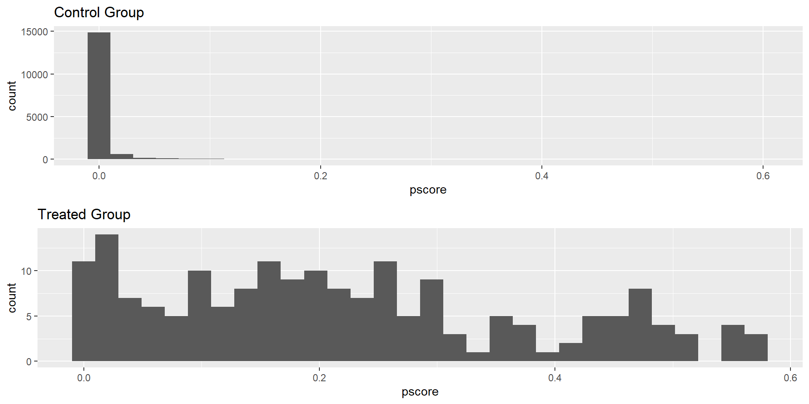

library(tidyverse)
library(haven)
# Define a function to read data from a URL
read_data <- function(df)
{
# Combine the base URL with the file name
full_path <- paste("https://github.com/scunning1975/mixtape/raw/master/",
df, sep = "")
# Read the .dta file from the URL
df <- read_dta(full_path)
# Return the data frame
return(df)
}
# Read the 'titanic.dta' data and create a new variable 'd'
titanic <- read_data("titanic.dta") %>%
mutate(d = case_when(class == 1 ~ 1, TRUE ~ 0)) # 'd' is 1 if 'class' is 1, 0 otherwise
# Calculate the mean of 'survived' for observations where 'd' is 1
ey1 <- titanic %>%
filter(d == 1) %>%
pull(survived) %>%
mean()
# Calculate the mean of 'survived' for observations where 'd' is 0
ey0 <- titanic %>%
filter(d == 0) %>%
pull(survived) %>%
mean()
# Calculate the difference in means
sdo <- ey1 - ey0
# Create a data frame
results <- data.frame(
ey1 = ey1,
ey0 = ey0,
sdo = sdo
)
# Print the data frame
print(results)Causal Inference Methods for Policy Evaluation
02-Subclassification and Matching
Jacopo Mazza
Utrecht School of Economics
2024
Subclassification
Should we ban tobacco advertisement?

Should we ban tobacco advertisement?
- Many countries have banned tobacco advertisement
- Reason?
- Tobacco advertisement increases smoking
- Smoking causes cancer
Does smoking cause cancer?

US data on smoking and lung cancer
Does smoking cause cancer?
- There is a strong correlation between smoking and lung cancer
- Does this mean that smoking causes cancer?
- Are smokers and non-smokers the same type of people?
- Do they have the same lifestyle?
- Do they have the same genetic predisposition?
- Do they have the same access to healthcare?
- Can we compare the health of smokers and non-smokers?
- Can we say that \(E[Y_i^0|D_i=1] - E[Y_i^0|D_i=0]\)?
Death Rates by Smoking Status
| Smoking status | Canada | UK | US |
|---|---|---|---|
| Non-smoker | 20.2 | 11.3 | 13.5 |
| Cigarettes | 20.5 | 14.1 | 13.5 |
| Cigars/pipes | 35.5 | 20.7 | 17.4 |
Death Rates by Smoking Status
| Smoking status | Canada | UK | US |
|---|---|---|---|
| Non-smoker | 20.2 | 11.3 | 13.5 |
| Cigarettes | 20.5 | 14.1 | 13.5 |
| Cigars/pipes | 35.5 | 20.7 | 17.4 |
- Highest death rates for cigars/pipe smokers
- Lowest death rates for non-smokers
- Death rates for cigarette smokers are not very different than those of non-smokers
- If smoking tobacco causes higher death rates cigarettes smokers should be the most affected
- Data suggests that cigars and pipes are more dangerous than cigarettes
- But is this true?
- is \(E[Y^1|Cigarettes]=E[Y^1|Cigars/pipes]\)?
- and \(E[Y^0|Cigarettes]=E[Y^0|Cigars/pipes]\)?
- We know that mortality is affected by other factors (age, education, etc.)
- If \(E[Y^0|Cigarettes]=E[Y^0|Cigars/pipes]\) then groups should be the same by these factors
- We call this balance
Age Balance?
| Smoking status | Canada | UK | US |
|---|---|---|---|
| Non-smoker | 54.9 | 49.1 | 57.0 |
| Cigarettes | 50.5 | 49.8 | 53.2 |
| Cigars/pipes | 65.9 | 55.7 | 59.7 |
- The two groups are not balanced by age
- Older people are more likely to smoke cigars/pipes
- Older people are more likely to die
- Maybe higher death rates for cigars/pipes are due to age
- Age is a confounder: it affects both smoking and death
Subclassification for Balance
| Age | Death rate cigarette smokers | Nr. cigarette smokers | Nr, pipe/cigar smokers |
|---|---|---|---|
| 20-40 | 20 | 65 | 10 |
| 41-70 | 40 | 25 | 25 |
| \(\geq\) 70 | 60 | 10 | 65 |
| Total | 100 | 100 |
- Divide age into strata
- Weight the mortality rate of the treatment group (cigarettes) by the proportion of the control group in each stratum
- In this example:
- What is the weighted mortality rate for cigarettes? \[\frac{65}{100} \times 20 + \frac{25}{100} \times 40 + \frac{10}{100} \times 60 = 29\]
- What would be the mortality rate for cigarettes smoker if they had the same age as pipe/cigars smokers? \[\frac{10}{100} \times 20 + \frac{25}{100} \times 40 + \frac{65}{100} \times 60 = 51\]
Adjusted Mortality Rates
| Smoking status | Canada | UK | US |
|---|---|---|---|
| Non-smoker | 20.2 | 11.3 | 13.5 |
| Cigarettes | 29.5 | 14.8 | 21.2 |
| Cigars/pipes | 19.8 | 11.0 | 13.7 |
Adjusted, by age, mortality rates are higher for cigarette smokers
Which variables should we adjust for?
- Variables that affect both treatment and outcome
- Variables that are confounders
The Titanic Example
- The Titanic was a British passenger liner that sank in the North Atlantic Ocean in 1912
- The ship carried 2,224 passengers and crew
- About 700 survived
- Wealthier passengers were more likely to survive
- Was it because they were seated in the upper decks?
- Or was it because women and children were seated in the upper decks?
Titanic Data
ey1 ey0 sdo
1 0.6246154 0.2707889 0.3538265- Difference in means: 35%
Titanic with Strata
- 35% is the simple, unadjusted difference in means
- What if we adjust for age and sex?
- We can use subclassification in 4 steps:
- Define 4 strata: young men, young women, old men, old women
- Calculate the difference in survival rates in each stratum
- Calculate the stratum-specific weights
- Calculate the weighted average survival rate
Titanic with Strata
library(stargazer)
library(magrittr) # for %$% pipes
library(tidyverse)
library(haven)
# Read the 'titanic.dta' data and create new variables 'd' and 's'
titanic <- read_data("titanic.dta") %>%
mutate(d = case_when(class == 1 ~ 1, TRUE ~ 0)) %>% # 'd' is 1 if 'class' is 1, 0 otherwise
mutate(s = case_when(sex == 0 & age == 1 ~ 1, # 's' is a categorical variable based on 'sex' and 'age'
sex == 0 & age == 0 ~ 2,
sex == 1 & age == 1 ~ 3,
sex == 1 & age == 0 ~ 4,
TRUE ~ 0))
# Calculate the mean of 'survived' for different groups
ey11 <- titanic %>% filter(s == 1 & d == 1) %$% mean(survived)
ey10 <- titanic %>% filter(s == 1 & d == 0) %$% mean(survived)
ey21 <- titanic %>% filter(s == 2 & d == 1) %$% mean(survived)
ey20 <- titanic %>% filter(s == 2 & d == 0) %$% mean(survived)
ey31 <- titanic %>% filter(s == 3 & d == 1) %$% mean(survived)
ey30 <- titanic %>% filter(s == 3 & d == 0) %$% mean(survived)
ey41 <- titanic %>% filter(s == 4 & d == 1) %$% mean(survived)
ey40 <- titanic %>% filter(s == 4 & d == 0) %$% mean(survived)
# Calculate the differences in means
diff1 = ey11 - ey10
diff2 = ey21 - ey20
diff3 = ey31 - ey30
diff4 = ey41 - ey40
# Calculate the number of observations where 'd' is 0
obs = nrow(titanic %>% filter(d == 0))
# Calculate weights for each group
wt1 <- titanic %>% filter(s == 1 & d == 0) %$% nrow(.)/obs
wt2 <- titanic %>% filter(s == 2 & d == 0) %$% nrow(.)/obs
wt3 <- titanic %>% filter(s == 3 & d == 0) %$% nrow(.)/obs
wt4 <- titanic %>% filter(s == 4 & d == 0) %$% nrow(.)/obs
# Calculate the weighted average treatment effect
wate = diff1*wt1 + diff2*wt2 + diff3*wt3 + diff4*wt4
# Put wate and sdo into a data frame
results <- data.frame(wate = wate, sdo = sdo)
# Use stargazer to create a table
stargazer(results, type = "text")
======================================
Statistic N Mean St. Dev. Min Max
--------------------------------------
wate 1 0.189 0.189 0.189
sdo 1 0.354 0.354 0.354
--------------------------------------Curse of Dimensionality
- Subclassification works as long as we have enough treated and non-treated observations in each stratum
- What if we have a lot of strata?
- Example: precise age instead of age groups.
- There are no 14 years old boys in first class
- We cannot calculate the difference in means for this group
- We cannot calculate the ATE using subclassification
- This is the curse of dimensionality
- We need to use other methods
Matching
Exact Matching
- When there are many covariates, subclassification is not feasible
- We could impute the missing potential outcomes:
- For each treated observation, find the non-treated observation with the closest covariates
- Use the non-treated observation to impute the missing potential outcomes
- Repeat for all treated observations
- This is called exact matching
Exact Matching for Work Training Programs
| Trainees | Non-Trainees | ||||
|---|---|---|---|---|---|
| Unit | Age | Earnings | Unit | Age | Earnings |
| 1 | 18 | 9500 | 1 | 20 | 8500 |
| 2 | 29 | 12250 | 2 | 27 | 10075 |
| 3 | 24 | 11000 | 3 | 21 | 8725 |
| 4 | 27 | 11750 | 4 | 39 | 12775 |
| 5 | 33 | 13250 | 5 | 38 | 12550 |
| 6 | 22 | 10500 | 6 | 29 | 10525 |
| 7 | 19 | 9750 | 7 | 39 | 12775 |
| 8 | 20 | 10000 | 8 | 33 | 11425 |
| 9 | 21 | 10250 | 9 | 24 | 9400 |
| 10 | 30 | 12500 | 10 | 30 | 10750 |
| 11 | 33 | 11425 | |||
| 12 | 36 | 12100 | |||
| 13 | 22 | 8950 | |||
| 14 | 18 | 8050 | |||
| 15 | 43 | 13675 | |||
| 16 | 39 | 12775 | |||
| 17 | 19 | 8275 | |||
| 18 | 30 | 9000 | |||
| 19 | 51 | 15475 | |||
| 20 | 48 | 14800 | |||
| Mean | 24.3 | $11,075 | Mean | 31.95 | $11,101.25 |
Exact Matching for Work Training Programs
| Trainees | Non-Trainees | ||||
|---|---|---|---|---|---|
| Unit | Age | Earnings | Unit | Age | Earnings |
| 1 | 18 | 9500 | 1 | 20 | 8500 |
| 2 | 29 | 12250 | 2 | 27 | 10075 |
| 3 | 24 | 11000 | 3 | 21 | 8725 |
| 4 | 27 | 11750 | 4 | 39 | 12775 |
| 5 | 33 | 13250 | 5 | 38 | 12550 |
| 6 | 22 | 10500 | 6 | 29 | 10525 |
| 7 | 19 | 9750 | 7 | 39 | 12775 |
| 8 | 20 | 10000 | 8 | 33 | 11425 |
| 9 | 21 | 10250 | 9 | 24 | 9400 |
| 10 | 30 | 12500 | 10 | 30 | 10750 |
| 11 | 33 | 11425 | |||
| 12 | 36 | 12100 | |||
| 13 | 22 | 8950 | |||
| 14 | 18 | 8050 | |||
| 15 | 43 | 13675 | |||
| 16 | 39 | 12775 | |||
| 17 | 19 | 8275 | |||
| 18 | 30 | 9000 | |||
| 19 | 51 | 15475 | |||
| 20 | 48 | 14800 | |||
| Mean | 24.3 | $11,075 | Mean | 31.95 | $11,101.25 |
- What is the effect of the training program?
- We have a sample of trainees and non-trainees
- Age differs between the two groups
- Age is a confounder: it affects earnings
- We can use exact matching to adjust for age
Exact Matching at Work
| Trainees | Non-Trainees | Matched Sample | ||||||
|---|---|---|---|---|---|---|---|---|
| Unit | Age | Earnings | Unit | Age | Earnings | Unit | Age | Earnings |
| 1 | 18 | 9500 | 1 | 20 | 8500 | 14 | 18 | 8050 |
| 2 | 29 | 12250 | 2 | 27 | 10075 | 6 | 29 | 10525 |
| 3 | 24 | 11000 | 3 | 21 | 8725 | 9 | 24 | 9400 |
| 4 | 27 | 11750 | 4 | 39 | 12775 | 8 | 27 | 10075 |
| 5 | 33 | 13250 | 5 | 38 | 12550 | 11 | 33 | 11425 |
| 6 | 22 | 10500 | 6 | 29 | 10525 | 13 | 22 | 8950 |
| 7 | 19 | 9750 | 7 | 39 | 12775 | 17 | 19 | 8275 |
| 8 | 20 | 10000 | 8 | 33 | 11425 | 1 | 20 | 8500 |
| 9 | 21 | 10250 | 9 | 24 | 9400 | 3 | 21 | 8725 |
| 10 | 30 | 12500 | 10 | 30 | 10750 | 10,18 | 30 | 9875 |
| 11 | 33 | 11425 | ||||||
| 12 | 36 | 12100 | ||||||
| 13 | 22 | 8950 | ||||||
| 14 | 18 | 8050 | ||||||
| 15 | 43 | 13675 | ||||||
| 16 | 39 | 12775 | ||||||
| 17 | 19 | 8275 | ||||||
| 18 | 30 | 9000 | ||||||
| 19 | 51 | 15475 | ||||||
| 20 | 48 | 14800 | ||||||
| Mean | 24.3 | $11,075 | Mean | 31.95 | $11,101.25 | Mean | 24.3 | $9,380 |
- We can match each trainee with a non-trainee with the same age
- If there are more non-trainees of the same age of a trainee, we can average the earnings of the non-trainees
- Mean age of the matched sample is 24.3 –> same as trainees
- The matched sample and the trainee sample are balanced by age
- We can compare the earnings of the two groups:
- The training program increases earnings by 1,695 dollars
Approximate Matching
What if we cannot find a non-trainee with the same age of a trainee?
- Nearest neighbor matching
- Find the non-trainee with the closest age
- If there are more non-trainees with the same age, average their earnings
- Propensity score matching
- Estimate the probability of being a trainee (propensity score)
- Match trainees and non-trainees with similar propensity scores
- If there are more non-trainees with the same propensity score, average their earnings
Nearest Neighbor Covariate Matching
- If number of covariates grows, it becomes more difficult to find a non-trainee with the same covariates
- We can find the non-trainee with the closest covariates
- What does close mean in this context?
- With one covariate, trivial to define
- With many covariates, we need to define a distance metric
- Two common distance metrics:
- Euclidean distance
- Mahalanobis distance
Propensity Score Methods
- The propensity score is the probability of being a trainee given the covariates
- It is estimated usually with logit or a probit
- The probabilities are used to match treated and non-treated units
- Example:
- 2 units A and B have the same propensity score (probability of treatment) but for some reason A is treated and B is not
- We match A with B and use B’s outcome to impute A’s potential outcomes
- If my model captures all the relevant covariates then:
\(E[Y^0|D=1, P(x)]=E[Y^0|D=0,P(x)]\)
Propensity Score Matching - Assumptions
Propensity score matching requires two assumptions:
- Common support: there is overlap in the propensity score distribution of the treated and non-treated units
- Unconfoundedness: conditional on the propensity score, treatment assignment is independent of potential outcomes
Important
Propensity score matching will give you unbiased estimates of the ATE if your model captures all relevant factors for selection.
Propensity Score in Action
- Dehejia and Wahba1 wanted to study how effective the National Supported Work Demonstration (NSW)
- NSW was a work training program for disadvantaged workers to move back in the labor market
- Workers were randomly assigned to the program
- They used propensity score matching to estimate the effect of the program
- Since we have the
realtreatment effect, we can compare the results of the matching with the true effect
The NSW Real Treatment Effect
library(tidyverse)
library(haven)
# Define a function to read data from a .dta file hosted on GitHub
read_data <- function(df)
{
# Construct the full URL to the file
full_path <- paste("https://github.com/scunning1975/mixtape/raw/master/", df, sep = "")
# Read the .dta file from the URL and return the resulting data frame
df <- read_dta(full_path)
return(df)
}
# Use the read_data function to read the "nsw_mixtape.dta" file
nsw_dw <- read_data("nsw_mixtape.dta")
# Calculate the mean of 're78' for rows where 'treat' equals 1
mean1 <- nsw_dw %>%
filter(treat == 1) %>%
pull(re78) %>%
mean()
# Add a new column 'y1' to the data frame, with all values set to 'mean1'
nsw_dw$y1 <- mean1
# Calculate the mean of 're78' for rows where 'treat' equals 0
mean0 <- nsw_dw %>%
filter(treat == 0) %>%
pull(re78) %>%
mean()
# Add a new column 'y0' to the data frame, with all values set to 'mean0'
nsw_dw$y0 <- mean0
# Calculate the Average Treatment Effect (ATE) as the difference between 'mean1' and 'mean0'
ate <- mean1 - mean0
# Create a data frame with the ATE and print it
ate_df <- data.frame(ATE = ate)
print(ate_df) ATE
1 1794.342Propensity Score Estimation Using Logit on PSID data:
# Load the necessary libraries
library(tidyverse)
library(haven)
library(gridExtra)
# Define a function to read data from a .dta file hosted on GitHub
read_data <- function(df)
{
# Construct the full URL to the file
full_path <- paste("https://github.com/scunning1975/mixtape/raw/master/", df, sep = "")
# Read the .dta file from the URL and return the resulting data frame
df <- read_dta(full_path)
return(df)
}
# Use the read_data function to read the "cps_mixtape.dta" file
# Bind the rows of the new data frame with the existing 'nsw_dw' data frame
# Create new variables in the data frame
nsw_dw_cpscontrol <- read_data("cps_mixtape.dta") %>%
bind_rows(nsw_dw) %>%
mutate(agesq = age^2,
agecube = age^3,
educsq = educ*educ,
u74 = case_when(re74 == 0 ~ 1, TRUE ~ 0),
u75 = case_when(re75 == 0 ~ 1, TRUE ~ 0),
interaction1 = educ*re74,
re74sq = re74^2,
re75sq = re75^2,
interaction2 = u74*hisp)
# Estimate a logistic regression model with 'treat' as the dependent variable
logit_nsw <- glm(treat ~ age + agesq + agecube + educ + educsq +
marr + nodegree + black + hisp + re74 + re75 + u74 +
u75 + interaction1, family = binomial(link = "logit"),
data = nsw_dw_cpscontrol)
# Add the predicted probabilities from the logistic regression model to the data frame
nsw_dw_cpscontrol <- nsw_dw_cpscontrol %>%
mutate(pscore = logit_nsw$fitted.values)
# Calculate the mean predicted probability for the control group
pscore_control <- nsw_dw_cpscontrol %>%
filter(treat == 0) %>%
pull(pscore) %>%
mean()
# Calculate the mean predicted probability for the treated group
pscore_treated <- nsw_dw_cpscontrol %>%
filter(treat == 1) %>%
pull(pscore) %>%
mean()
# Create a histogram of the predicted probabilities for the control group
hist_control <- nsw_dw_cpscontrol %>%
filter(treat == 0) %>%
ggplot() +
geom_histogram(aes(x = pscore)) +
ggtitle("Control Group")
# Create a histogram of the predicted probabilities for the treated group
hist_treated <- nsw_dw_cpscontrol %>%
filter(treat == 1) %>%
ggplot() +
geom_histogram(aes(x = pscore)) +
ggtitle("Treated Group")
# Arrange the two histograms in a grid
grid.arrange(hist_control, hist_treated, nrow = 2)
The Common Support
- Propensity score requires common support:
- There must be overlap in the propensity score distribution of the treated and non-treated units
- If there is no overlap, we cannot match treated and non-treated units
- We can check for common support by plotting the propensity score distribution of the treated and non-treated units
- If there is no overlap, we are in trouble
- In the example we have a mass at Prob=0 for the control
- Characteristics of treated individuals are rare in the population
Propensity Score Matching
- Once I have a propensity score I can use it to match similar observations
- I can find \(n\) untreated units with a similar propensity score to match my treated unit
- This is called nearest-neighbour matching
Nearest-neighbour matching
library(MatchIt)
library(Zelig)
m_out <- matchit(treat ~ age + agesq + agecube + educ +
educsq + marr + nodegree +
black + hisp + re74 + re75 + u74 + u75 + interaction1,
data = nsw_dw_cpscontrol, method = "nearest",
distance = "logit", ratio =5)
m_data <- match.data(m_out)
z_out <- zelig(re78 ~ treat + age + agesq + agecube + educ +
educsq + marr + nodegree +
black + hisp + re74 + re75 + u74 + u75 + interaction1,
model = "ls", data = m_data)
x_out <- setx(z_out, treat = 0)
x1_out <- setx(z_out, treat = 1)
s_out <- sim(z_out, x = x_out, x1 = x1_out)
summary(s_out) - The ATT is 1,725 dollars
- Nearest neighbour matching has matched 5 control units \(j\) to each treated unit \(i\)
- The control units outcome is plugged into a matched sample
- We can then calculate the ATT: \[\widehat{ATT}=\frac{1}{N_T}(Y_i - Y_{(i)j})\]